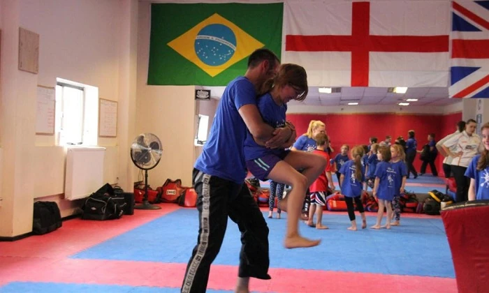

Olukorra mõistmine
Kuidas märgata ja hinnata enda ümber toimuvat.
Laste programm
Mänguline, aktiivne ja eale kohandatud treening, mis arendab olukorrateadlikkust, hääle kasutamist ja praktilisi enesekaitseoskusi. Laste treeningud toimuvad.

Laste treeningud toimuvad. Sobiva rühma, treeninguaja ja toimumiskoha kohta saad kõige värskema info aadressil info@krav-maga.ee või telefonil +372 56 996 191.
Mida laps õpib
Treening ühendab olukorrateadlikkuse, hääle kasutamise, eakohased enesekaitseoskused ja aktiivse liikumise.
Kuidas märgata ja hinnata enda ümber toimuvat.
Selge eneseväljendus, oma hääle kasutamine ja piiride seadmine.
Praktilised harjutused ja võtted, mis kohandatakse lapse vanusele.
Üldine füüsiline vorm, vastupidavus ja vaheldusrikkad harjutused.
Kuidas treening toimub
Treening on aktiivne ja mänguline, kuid lapsel peab olema aega kohaneda. Pingelisema harjutuse juurde minnakse siis, kui laps tunneb end selleks piisavalt turvaliselt.
Treeningu iseloom muutub koos lapse vanuse ja valmisolekuga.
Iga laps saab harjutustega kohanemiseks vajaliku aja.
Laste treeninguid juhendavatel instruktoritel ja abiinstruktoritel on KMG erikoolitus lastega töötamiseks.
Enesekaitse, mitte võitlus
Krav maga lastele arendab olukorrateadlikkust, selget häälekasutust ja ohust eemaldumise oskusi. Treening ei õpeta lapsi võitlema.
Selge häälega keeldumine, piiride seadmine ja enesekindel kehakeel.
Harjutatakse, kuidas kiusamisele kehahoiaku, hääle ja selgete piiridega reageerida. Füüsilist enesekaitset kasutatakse alles siis, kui eemaldumine või abi otsimine ei ole võimalik.
Ohuolukorras eemalduda ja vajadusel täiskasvanu abi otsida.
Vanus ja sobiv vorm
Vanemate teismeliste puhul hinnatakse sobivat treeningvormi individuaalselt. Lapsele sobiva rühma või personaaltreeningu kohta saab küsida otse instruktorilt.
Lapsevanem võib treeningut vaadata, küsida instruktorilt tagasisidet ja toetada last treeningute vahel.
KKK
Jah. Laste treeningud toimuvad. Sobiva rühma kohta saab küsida e-posti või telefoni teel.
Krav maga sobib lastele alates 5. eluaastast. Vanemate teismeliste puhul hinnatakse sobivat treeningvormi individuaalselt.
Ei. Eelnevat kogemust ei nõuta. Krav maga sobib täiesti algajatele.
Ei. Krav maga lastele arendab teadlikkust, selget häälekasutust ja oskust ohust eemalduda. Treening on mänguline ja positiivne. Eesmärk ei ole agressiivsuse arendamine.
Lapsed harjutavad kehahoiakut, häälega piiri seadmist ja ohust eemaldumist. Füüsiline enesekaitse tuleb kasutusele alles siis, kui lahkumine ega abi otsimine pole võimalik.
Sobiva rühma, treeninguaja ja toimumiskoha kohta saad kõige värskema info e-posti või telefoni teel.
Hinnainfo saamiseks kirjuta info@krav-maga.ee või helista +372 56 996 191.
Jah. Lapsevanemad võivad treeningut vaadata ja instruktorilt tagasisidet küsida.
Kirjuta või helista. Aitame leida lapsele sobiva rühma.